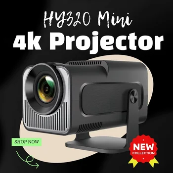

Discover the Woopker HY320 Mini Android Projector: Your Portable Viewing Solution
In the evolving landscape of portable entertainment, finding a projector that combines high performance with user-friendly features is key. The Woopker HY320 Mini Android 4K Projector emerges as a notable contender, offering a blend of advanced technology and practical design. This comprehensive overview delves into its core specifications and features, highlighting how it aims to transform your viewing experiences, whether for personal enjoyment or small group gatherings.
Before we dive deeper into the capabilities of this projector, let's briefly look at its standout features that make it a compelling choice for various applications.
Unveiling Superior Visual Performance with Native 720P Full HD
For individuals who prioritize picture clarity, the Woopker HY320 Mini Android Projector offers a significant upgrade. It features a newly upgraded Native 720P Full HD Resolution, providing a crisp and detailed image quality that enhances the viewing of various forms of content. The native resolution of 1280x720 ensures that content is displayed with precision.
Beyond its resolution, the projector boasts an impressive brightness of 12000 Lumens. This high luminosity contributes to a vibrant and visible picture, even in environments with moderate ambient light. Coupled with a dynamic contrast ratio of up to 10000:1, the projector is designed to present a picture that is not only clear and bright but also rich in color and depth, distinguishing between dark and light areas effectively.
It's important to note a specific detail regarding its video processing: the Woopker HY320 projector can support 4K video decoding. This means it can process and interpret high-resolution 4K video files. However, its highest output resolution is 1280x720P. This distinction is crucial for understanding its capabilities – it can handle high-definition input, but the final display will be rendered at its native 720P resolution, optimized for clarity and performance within its design parameters.
Key Visual Specifications:
- **Native Resolution:** 1280x720P (Full HD)
- **Brightness:** 12000 Lumens
- **Dynamic Contrast Ratio:** Up to 10000:1
- **4K Video Decoding:** Supported (Output at 720P)
Immersive Audio with BT 5.0 and HiFi Stereo Speakers
A complete viewing experience often requires compelling audio, and the Woopker HY320 aims to deliver on this front. The projector comes with built-in dual HiFi stereo surround speakers. These speakers are engineered to restore the original audio fidelity of your content, providing a satisfying listening experience directly from the device. This feature can be particularly convenient, as it potentially eliminates the immediate need for connecting external audio equipment for basic use.
Furthermore, the inclusion of BT 5.0 functionality significantly enhances the projector's audio versatility. Bluetooth 5.0 offers stable and efficient wireless connectivity, allowing you to easily connect various audio equipment. You can pair headphones for private listening, or connect external speakers to amplify the sound for a larger audience. This capability is designed to help create a more encompassing audio environment, contributing to a sense of immersion often associated with cinema-level experiences, all from the comfort of your chosen space.
Transform Any Space with a Giant 200-Inch Screen
One of the most appealing aspects of a projector is its ability to cast a large image, and the Woopker HY320 excels in this regard. This portable projector is capable of providing a projection display ranging from a substantial 85 inches up to a truly giant 200 inches. This wide range of screen sizes offers significant flexibility for various applications and environments.
To achieve these impressive screen dimensions, the projector operates effectively within a projection distance of 1.68 meters to 2.34 meters. This relatively short throw distance can be advantageous for smaller rooms or confined spaces, allowing for a large image without needing to place the projector far away. The consistent 16:9 aspect ratio ensures that content is displayed in a standard widescreen format, making it optimal for modern content consumption.
Whether you are setting up a personal viewing station, conducting a small presentation, or creating an outdoor viewing area, the ability to adjust the screen size makes this projector a versatile tool. The clarity and brightness described earlier are maintained across these screen sizes, aiming to provide a consistent quality viewing experience.
Seamless Connectivity with Ultra-Fast WiFi 6 2.4G/5G Dual Band
In today's interconnected world, reliable and fast wireless connectivity is paramount for any smart device. The Woopker HY320 Mini Android Projector integrates industry-leading WiFi 6 technology. WiFi 6 (802.11ax) is designed to offer significantly faster transmission speeds and more stable connections compared to previous generations of Wi-Fi. This means you can enjoy a smoother viewing experience, reducing buffering and lag, which is particularly beneficial for streaming high-definition content or online activities.
The projector also supports 2.4G/5G dual band WiFi. The dual-band capability allows the projector to connect to both the 2.4 GHz and 5 GHz frequency bands. The 2.4 GHz band provides wider coverage, while the 5 GHz band offers faster speeds and less interference, which is ideal for demanding tasks like high-resolution video streaming. This dual-band support enhances connection reliability and performance, adapting to different network environments.
Beyond general internet connectivity, the projector facilitates wireless screen mirroring through Miracast and Airplay. Miracast is a standard for wirelessly connecting displays to devices, allowing you to mirror content from compatible Android devices. Airplay, similarly, enables mirroring or streaming content from Apple devices. These features provide a convenient way to share content from your phone, tablet, or laptop directly onto the large projection screen without the need for cables, simplifying setup and interaction.
Smart Features and System Specifications
The Woopker HY320 Mini Android Projector is not just a display device; it's a smart system powered by Android 11. Running on a familiar Android operating system provides access to a range of applications and content, offering a versatile platform for entertainment and utility. The system's core is driven by an Allwinner H713 / ARM Cortex-A53 CPU, which handles processing tasks efficiently, contributing to smooth operation.
For graphics processing, it utilizes a Mali-G31 GPU. This GPU supports modern graphics APIs such as OpenGL ES3.2, Vulkan 1.1, and OpenCL2.0, indicating its capability to render graphics effectively, which is beneficial for the user interface and supported applications. The integrated AW869A module provides the dual band WiFi6 + BT5.0 functionalities, centralizing wireless communication.
Setting up the projector is made easier with its automatic ladder correction feature. This function automatically adjusts the keystone distortion that can occur when the projector is not perfectly perpendicular to the screen, ensuring a properly rectangular image without manual adjustments. The projection ratio is specified at 1.0.9, which is a key parameter for calculating screen size based on projection distance. These system-level features collectively aim to provide a streamlined and user-friendly experience.
What's Included in the Package
Upon acquiring the Woopker HY320 Mini Android Projector, you can expect a comprehensive package designed to get you started promptly. Each package includes:
- 1x Woopker HY320 Projector
- 1x Remote control for convenient operation
- 1x Power cord to connect to an electrical source
- 1x Manual for detailed instructions and troubleshooting
This standard set of accessories ensures that you have the essential components needed to set up and begin using your projector right out of the box.
Conclusion
The Woopker HY320 Mini Android 4K Projector positions itself as a robust and versatile solution for portable viewing needs. With its native 720P Full HD resolution, high brightness, and dynamic contrast, it aims to deliver clear and vivid images. The integration of BT 5.0 and HiFi stereo speakers enhances the audio dimension, while the ability to project a large 200-inch screen offers significant flexibility. Furthermore, its ultra-fast WiFi 6 connectivity, Android 11 operating system, and automatic ladder correction contribute to a smart and convenient user experience. For those seeking a feature-rich, compact projector that balances performance with portability, the Woopker HY320 presents a compelling option.